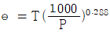
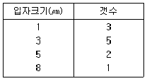
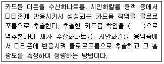

대기환경기사 (2006-05-14 기출문제)
1과목: 대기오염 개론
1. 2차 대기오염물질과 가장 거리가 먼 것은?
- H2O2
- NaCl
- O3
- NOCl
(정답률: 알수없음)

2. '분산모델'에 관한 설명으로 틀린 것은?
- 특정한 오염원의 배출속도와 바람에 의한 분산요인을 입력자료로 하여 수용체 위치에서의 영향을 계산한다.
- 특정오염원의 영향을 평가 할 수 있는 잠재력이 있다.
- 기상과 관련하여 대기 중의 무작위적인 특성을 적절하게 묘사할 수 없기 때문에 결과에 대한 불확실성이 크게 작용한다.
- 단기 분석에 적절하며 지형 및 오염원의 조업조건에 영향을 받지 않는다.
(정답률: 알수없음)
3. 질소산화물에 관한 설명으로 알맞지 않은 것은?
- 대기 중의 체류시간은 NO2 가 N2O 에 비하여 짧다.
- 연소시 발생되는 질소산화물은 90% 이상이 NO 로 발생한다.
- N2O는 대류권에서 태양에너지에 대하여 매우 불안정하며 온실가스로 주목되고 있다.
- NO와 N2O는 미생물 작용에 의하여 토양과 해양에서 배출된다.
(정답률: 알수없음)
4. 다음의 대기오염물질별로 해당 되는 지표식물을 잘못 짝지은 것은?
- NH3 - 해바라기
- SO2 - 담배
- HF - 알팔파
- O3 - 시금치
(정답률: 알수없음)
5. 성층권 오존 감소에 따른 영향과 가장 거리가 먼 것은?
- 백내장 등의 질환이 발생될 확률이 높아진다.
- 피부균인 디프테리아 등의 살균력 저하로 피부암에 걸릴 확률이 증가한다.
- 광합성 작용과 수분이용의 효율감소로 농작물의 잎이 파괴되어 생산량을 감소시킨다.
- 해양에서 광합성 플랑크톤에 피해를 주어 먹이사슬에 악영향을 일으킨다.
(정답률: 알수없음)
6. 지상 10m 에서의 풍속이 7.5m/sec 라면 50m에서의 풍속은? (단, Deacon의 power law 인용, 대기안정도에 따른 P=0.5)
- 약 10.8m/sec
- 약 12.8m/sec
- 약 14.8m/sec
- 약 16.8m/sec
(정답률: 알수없음)
7. 대기오염물의 분산모델 중 상자모델(BOX MODEL)의 기본적인 가정을 설명한 것이다. 관계 없는 것은?
- 고려되는 공간의 수직단면에 직각방향으로 부는 바람의 속도가 일정하여 환기량이 일정하다.
- 오염물의 분해는 1차반응에 의한다.
- 오염원은 방출과 동시에 균등하게 혼합된다.
- 고려되는 공간에 단일 점원으로부터 오염물이 계속적으로 배출된다.
(정답률: 알수없음)
8. 대기압력이 950mb 인 높이에서의 온도가 -10℃이었다. 온위(potential temperature)는? ( 단,

)- 약 267 K
- 약 277 K
- 약 287 K
- 약 297 K
(정답률: 알수없음)
9. 대기 오염물질 중 탄화수소에 관한 설명으로 틀린 것은?
- 대기환경 중에서 탄화수소는 기체, 액체 또는 고체로 존재한다.
- 포화탄화수소는 이중 결합 또는 3중 결합을 갖고 있으며 반응성이 높다.
- 탄화수소류 중에서 이중결합을 가진 올레핀화합물은 방향족 탄화수소보다 대기 중에서의 반응성이 크다.
- 지구규모의 탄화수소 발생량으로 볼 때 인위적 발생량은 전체의 1% 정도이다.
(정답률: 알수없음)
10. 굴뚝에서 배출되는 연기의 확산모형 중 침강역전과 복사역전이 동시에 발생한 경우 나타나는 것으로 가장 적절한 것은?
- 환상형
- 부채형
- 구속형
- 지붕형
(정답률: 알수없음)
11. 150℃ 740mmHg에서 SO2 가스농도가 250mg/m3 이라면 표준 상태에서는 몇 ppm 인가?
- 139
- 155
- 164
- 172
(정답률: 알수없음)
12. 리차드슨(Richardson)수에 관한 설명으로 틀린 것은?
- 0인 경우는 기계적 난류만 존재한다.
- 무차원수로서 근본적으로 대류난류를 기계적인 난류로 전환시키는 율을 측정한 것이다.
- 큰 음의 값을 가지면 대류가 지배적이어서 바람이 약하게 된다.
- 0.25에 보다 크게 되면 수직혼합만 남는다.
(정답률: 알수없음)
13. 가스상 오염물질인 CO에 관한 설명으로 틀린 것은?
- 대기중에서 일산화탄소의 평균 체류시간은 발생량과 대기 중 평균 농도로부터 1~3년으로 추정되고 있다.
- 지구의 위도별로 일산화탄소의 분포는 공업이 발달한 북위 50도 부근에서 최대치를 보인다.
- 물에 난용성이기 때문에 수용성 가스와는 달리 비에 의한 영향을 거의 받지 않는다.
- 대기 중에서 이산화탄소로 산화되기 어려우며 다른 물질에 흡착현상도 거의 나타내지 않는다.
(정답률: 알수없음)
14. 알루미늄공업, 유리공업, 요업에서 배출되는 대표적 대기오염물질로 가장 적절한 것은?
- 아황산가스
- 일산화탄소
- 불화수소
- 염화수소
(정답률: 알수없음)
15. 멕시코의 포자리카에서 발생한 대기오염사건의 주요원인물질은?
- 아황산가스
- 황화수소
- 불화수소
- 염화수소
(정답률: 알수없음)
16. 실제 굴뚝 높이가 80m, 굴뚝 내경 5m, 배출속도 20m/s, 굴뚝 주위의 풍속이 5m/s 이라면 유효굴뚝 높이는? (단, △H = 1.5 × (Vs/U) × D 를 적용)
- 100m
- 110m
- 120m
- 130m
(정답률: 알수없음)
17. 배출가스 중 HCl 농도가 80ppm 이었다. HCl의 배출허용기준이 20mg/m3 라면 이 배출시설에서 처리를 통하여 줄여야 할 염화수소의 농도는 몇 mg/m3인가? (단, 표준상태 기준, HCl의 분자량은 36.5이다.)
- 42.6
- 64.5
- 85.2
- 110.4
(정답률: 알수없음)
18. 다음 중 자동차의 크랭크 케이스에서 가장 많이 배출되는 blow by 가스성분은?
- HC
- NOx
- CO
- TSP
(정답률: 알수없음)
19. 복사이론에 관련된 법칙 중 최대 에너지 파장과 흑체 표면의 절대온도가 반비례함을 나타내는 것은? (단, 상수 2897 적용)
- 스테판-볼츠만의 법칙
- 비인의 변위법칙
- 플랑크 법칙
- 플래밍 법칙
(정답률: 알수없음)
20. 파장 5200 Å인 빛 속에서 밀도가 1.2g/cm3이고, 직경 0.3㎛인 분진의 분산면적 비가 3일 때 분진농도가 300㎍/m3 이라면 가시거리(V)는? (단, V = [(5.2 ㆍ ρㆍ r)/(K ㆍ C)]식 적용)
- 1040m
- 1290m
- 1430m
- 1620m
(정답률: 알수없음)
2과목: 연소공학
21. 연소가스 분석결과가 CO2 max = 20%, CO2 = 15%, CO = 5% 일때 연소가스 중의 O2 는 몇 % 인가?
- 2.5%
- 5.0%
- 7.5%
- 10.5%
(정답률: 알수없음)
22. 프로판의 고발열량이 20000kcal/Nm3이라면 저발열량(kcal/Nm3)은?
- 17240
- 17820
- 18080
- 18430
(정답률: 알수없음)
23. 석유의 물성치에 관한 설명으로 틀린 것은?
- 경질유는 방향족계 화합물을 10% 미만 함유한다고 할 수 있다.
- 점도가 낮을수록 유동점이 낮아지므로 일반적으로 저점도의 중유는 고점도의 중유보다 유동점이 낮다.
- 석유의 동점도가 감소하면 끓는점과 인화점이 높아진다.
- 석유의 비중이 커지면 탄화수소비(C/H)가 증가한다.
(정답률: 알수없음)
24. 어떤 송풍관에 송풍량 40m3/min을 통과시켰을 때 16mmH2O 의 압력손실이 생겼다면 이 송풍관의 압력손실이 25mmH2O로 해야 할 경우 필요한 송풍량(m3/min)은?
- 50
- 55
- 60
- 65
(정답률: 알수없음)
25. 프로판 1Sm3을 공기비 1.4로 완전연소시킬 때 실제 습연소가스량(Sm3)은?
- 25.8
- 28.8
- 32.1
- 35.3
(정답률: 알수없음)
26. 수소 12%, 수분 0.7%인 중유의 고위발열량이 5000kcal/kg일 때 저위발열량(kcal/kg)은?
- 4348
- 4412
- 4436
- 4514
(정답률: 알수없음)
27. 액체연료의 연소장치인 고압기류분무식 버너에 관한 설명으로 틀린것은?
- 분무각도는 작지만 유량조절비는 커서 부하변동에 적응이 용이하다.
- 연료유의 점도가 큰 경우도 분무화가 용이하나 연소시 소음이 크다.
- 연료분사범위는 외부혼합식이 500~1000L/hr, 내부혼합식이 300~500L/hr 정도이다.
- 분무에 필요한 1차 공기량은 이론연소공기량의 7~12% 정도이다.
(정답률: 22%)
28. S함량이 2%인 벙커C유 1000kL를 사용하는 보일러에 S함량이 5%인 벙커C유를 50% 섞어서(S함량 2%인 벙커C유 50kL + S함량 5% 벙커C유 50kL)사용한다면 S의 배출량은 약 몇 % 증가하겠는가? (단, B-C유 비중은 0.95기준이며, 황은 전량이 배출된다. %는 무게기준으로 한다.)
- 70%
- 75%
- 80%
- 85%
(정답률: 알수없음)
29. 순수한 프로판으로 된 액화석유가스 350kg을 기화시켜 얻은 프로판 연료의 부피(Sm3)는?
- 약 131
- 약 151
- 약 178
- 약 192
(정답률: 알수없음)
30. 액화석유가스(LPG)에 대한 설명 중 틀린 것은?
- 황분이 적고 독성이 없다.
- 사용에 편리한 기체연료의 특징과 수송 및 저장에 편리한 액체연료의 특징을 겸비하고 있다.
- 천연가스에 회수되기도 하지만 대부분 석유정제시 부산물로 얻어진다.
- 비중이 공기보다 가벼워 누출될 경우 인화 폭발할 위험성이 크다.
(정답률: 알수없음)
31. 착화온도에 관한 설명으로 틀린 것은?
- 화학결합의 활성도가 작을수록 낮아진다.
- 동질성 물질에서 발열량이 클수록 낮아진다.
- 비표면적이 클수록 낮아진다.
- 공기의 산소농도 및 압력이 높을수록 낮아진다.
(정답률: 40%)
32. 화씨온도 200℉를 절대온도(0K)로 환산한 값으로 적절한 것은?
- 311
- 334
- 367
- 394
(정답률: 19%)
33. 어떤 석탄의 원소구성비가 무게비로 C: 70%, H: 10%, O: 15%, S: 5%로 나타났다. 이 석탄 1kg을 완전연소시킬 때 필요한 이론공기량은 몇 kg인가?
- 9.6
- 10.4
- 11.1
- 12.2
(정답률: 28%)
34. 메탄 1mole이 공기비 1.2로 연소하고 있다면 등가비는 얼마인가?
- 0.63
- 0.83
- 1.26
- 1.62
(정답률: 알수없음)
35. 다음의 기체연료 중 고위발열량(kcal/Nm3)이 가장 낮은 것은?
- 메탄
- 프로판
- 에탄
- 에틸렌
(정답률: 60%)
36. 중유를 원소분석하였더니 C: 85%, H: 7%, S: 3.2%, N: 3.1%, H2O: 1.7%였다면 이론 습연소가스량(Sm3/kg)은?
- 10
- 12
- 14
- 16
(정답률: 알수없음)
37. 연소실 내로 공급되는 연료를 연소시키기 위해 필요한 공기를 공급하는 통풍방식 중 압입통풍에 관한 설명으로 가장 거리가 먼 것은?
- 내압이 정압(+)으로 연소효율이 좋다.
- 송풍기의 고장이 적고 점검 및 보수가 용이하다.
- 역화의 위험성이 없다.
- 흡인통풍방식보다 송풍기의 동력 소모가 적다.
(정답률: 알수없음)
38. 다음의 자동차배기가스 중에서 삼원촉매장치가 적용되는 물질과 가장 거리가 먼 것은?
- CO
- SOx
- NOx
- HC
(정답률: 알수없음)
39. 기체 연료의 연소방식 중 확산연소에 관한 설명과 가장 거리가 먼 것은?
- 역화의 위험성이 없다.
- 가스와 공기를 예열할 수 없다.
- 붉고 긴 화염을 만든다.
- 연료의 분출속도가 클 경우 그을음이 발생하기 쉽다.
(정답률: 알수없음)
40. 탄소 86%, 수소 14%로 구성된 경유 1kg을 공기비 1.2로 연소시킨다. 이때 2%의 탄소가 불완전연소로 인해 먼지로 발생 된다면 건조연소가스 중 먼지의 농도(g/Sm3)는?
- 약 0.9
- 약 1.3
- 약 2.2
- 약 3.1
(정답률: 알수없음)
3과목: 대기오염 방지기술
41. 처리가스량이 1000m3/hr인 집진장치에 사용하는 송풍기의 전압이 400mmH2O, 전압효율 65%일 때 송풍기 소요동력(kW)? (단, 여유율은 1.2)
- 2
- 4
- 6
- 8
(정답률: 알수없음)
42. NO 460ppm, NO2 46.0ppm을 함유한 배기가스 100000Nm3/hr를 NH3에 의해 선택적 접촉환원법에서 처리할 경우 NOx를 제거하기 위한 NH3의 이론량은? (단, 반응에 산소는 고려하지 않음)
- 약 13kg/hr
- 약 19kg/hr
- 약 23kg/hr
- 약 28kg/hr
(정답률: 알수없음)
43. 기상총괄이동단위 높이 Hog가 2.0m인 충전탑을 사용하여 배기가스 중의 HF를 NaOH 수용액에 흡수 제거하려 한다. 제거율(흡수효율)이 97%가 되기 위한 이론적 충전높이는?
- 5.6m
- 6.8m
- 7.0m
- 8.2m
(정답률: 알수없음)
44. 전기집진장치의 장애현상중 2차 전류가 많이 흐를 때의 원인으로 틀린 것은?
- 분진의 농도가 너무 높을 때 발생한다.
- 공기 부하시험을 행할 때 발생한다.
- 방전극이 너무 가늘 때 발생한다.
- 이온농도가 큰 가스를 처리할 때 발생한다.
(정답률: 알수없음)
45. 아래 구형입자의 크기분포에 대하여 기하평균 직경(geometric mean diameter)은?

- 2.67㎛
- 2.97㎛
- 3.27㎛
- 3.77㎛
(정답률: 알수없음)
46. 벤츄리 스크러버(Venturi Scrubber)에 대한 설명 중 잘못된 것은?
- 분진입자가 친수성이 적을 때 액가스비가 크게된다.
- 벤튜리관의 목부의 함진가스 유속은 60~90m/sec정도이다.
- 압력손실은 300~800mmH2O 정도로 높다.
- 친수성이 아닌 입자의 액가스비는 10~30L/m3정도이다.
(정답률: 알수없음)
47. 흡수탑에 적용되는 흡수액 선정시 고려할 사항과 가장 거리가 먼 것은?
- 용해도가 커야 한다.
- 비표면적이 커야 한다.
- 어는 점이 낮아야 한다.
- 시장성이 좋고 값이 싸야 한다.
(정답률: 43%)
48. 황성분이 1%인 중유를 10톤/시간으로 연소할 때 배출되는 가스를 CaCO3로 탈황하고 황을 석고(CaSO4ㆍ2H2O)로 회수할 경우 부산물인 석고의 생성량(톤/시간)은? (단, 황분은 100% SO2로 전환됨, 탈황률은 90%이며 Ca: 40이다.)
- 약 0.2
- 약 0.5
- 약 1.2
- 약 1.8
(정답률: 알수없음)
49. 전기집진장치의 특징으로 틀린 것은?
- 운전조건의 변화에 따른 유연성이 적다.
- 광범위한 온도와 대용량 범위에서 운전이 가능하다.
- 비저항이 큰 분진의 제거가 용이하다.
- 압력손실이 적어 송풍기의 동력비가 적게 든다.
(정답률: 알수없음)
50. 입자측정방법인 관성충돌법(Cascade impactor)에 관한 설명으로 틀린 것은?
- 관성충돌을 이용하여 입경을 간접적으로 측정하는 방법이다.
- 입자의 질량크기분포를 알 수 있다.
- 시료채취가 용이하고 채취준비에 시간이 걸리지 않는 장점이 있다.
- 되튐으로 인한 시료의 손실이 일어날 수 있다.
(정답률: 알수없음)
51. 집진효율이 80%인 1차집진장치가 있다. 총집진율이 98%이라면 1차집진장치와 직렬로 연결된 2차집진장치의 집진효율은?
- 90%
- 95%
- 98%
- 99%
(정답률: 20%)
52. 전기집진장치의 처리가스 유량 120m3/min, 집진극 면적 400m2, 입구 먼지농도 25g/Sm3, 출구 먼지농도 0.25g/Sm3이고 누출이 없을 때 충전입자의 이동속도는? (단, Deutsch 효율식 적용)
- 0.016m/sec
- 0.023m/sec
- 0.036m/sec
- 0.042m/sec
(정답률: 알수없음)
53. 유효높이가 5m이고 직경이 15cm인 백필터(bag filter) 30개로 배출가스를 처리하고 있는 집진장치에서 가스유량을 120m3/min로 유지하면 여과속도(cm/sec)는?
- 1.18
- 2.83
- 3.18
- 4.14
(정답률: 알수없음)
54. 유해가스 처리의 충전탑(packed tower)에 대한 설명 중 틀린 것은?
- 충전탑은 충전물을 채운 탑내에서 액을 위에서 밑으로 흐르게 하고 가스는 아래에서 분사시켜 접촉시키는 기체분산형 흡수장치이다.
- 충전제를 불규칙적으로 충전하는 방법은 접촉면적이 크나 압력손실은 크다.
- 범람점에서의 가스속도는 충전제를 불규칙하게 쌓았을 때 보다 규칙적으로 쌓았을 때가 더 크다.
- 일반적으로 충전탑의 직경(D)과 충전제 직경(d)의 비 D/d가 8~10일 때 편류현상이 최소가 된다.
(정답률: 알수없음)
55. 악취물질의 성질과 발생원에 대한 설명 중 틀린 것은?
- 아크로레인(CH2CHCHO)은 자극취 물질로 석유화학, 약품제조시에 발생한다.
- 메틸메르캅탄(CH3SH)은 부패양파취 물질로 석유정제나 약품제조시에 발생한다.
- 황화수소(H2S)는 썩은 계란취 물질로 석유정제나 약품 제조시에 발생한다.
- 에틸아민(C2H5NH2)은 마늘취 물질로 석유정제, 인쇄작업장에서 발생한다.
(정답률: 알수없음)
56. 직경이 400mm인 관에 30m3/min의 공기가 통과한다면 공기의 이동속도는?
- 3.23m/sec
- 3.45m/sec
- 3.72m/sec
- 3.98m/sec
(정답률: 알수없음)
57. 굴뚝배출가스 중 불화수소농도는 250ppm이었다. 이 때 배출가스량 1000Sm3/hr인 가스를 10m3의 물로 10시간 세정할 경우 순환수의 pH는? (단, F원자량: 19, 불화수소는 90%전리한다고 가정)
- 1.4
- 1.7
- 2.0
- 2.3
(정답률: 알수없음)
58. 640℃에서 벤젠을 연소하여 제거할 경우 99% 제거되는데 소요되는 시간(sec)은? (단, 640℃에서의 속도상수 k는 0.2/sec이고, 1차반응기준)
- 23
- 28
- 33
- 38
(정답률: 알수없음)
59. 덕트 직경이 30cm이고 공기유속이 20m/sec일 때 레이놀드수는? (단, 공기점성계수 1.85×10-5kg/secㆍm, 공기밀도 1.2kg/m3)
- 약 300000
- 약 330000
- 약 360000
- 약 390000
(정답률: 알수없음)
60. 다음 여과포(filter bag)재질 중에서 내산성 및 내 알카리성이 모두 양호한 것은?
- 비닐론
- 사란
- 테트론
- 목면
(정답률: 알수없음)
4과목: 대기오염 공정시험기준(방법)
61. 분석대상가스별 흡수액으로 잘못 짝지어진 것은?
- 페놀- 수산화나트륨용액(0.4w/v%)
- 비소- 수산화나트륨용액(4w/v%)
- 브롬화합물- 수산화나트륨용액(0.4w/v%)
- 질소산화물- 수산화나트륨용액(0.4w/v%)
(정답률: 40%)
62. 공정시험방법상 기체 중의 농도를 mg/m3로 표시했을 때 m3가 의미하는 것으로 옳은 것은?
- 실측상태의 온도, 압력하에서의 기체용적
- 표준상태의 온도, 압력하에서의 기체용적
- 상온상태의 온도, 압력하에서의 기체용적
- 절대온도, 절대압력하에서의 기체용적
(정답률: 알수없음)
63. 굴뚝반경(굴뚝 단면이 원형)이 2.3m인 경우 측정점 수는?
- 8
- 12
- 16
- 20
(정답률: 알수없음)
64. 흡광차분광법에 관한 설명으로 틀린 것은?
- 일반 흡광광도법은 적분적이며 흡광차분광법은 미분적이라는 차이가 있다.
- 측정에 필요한 광원은 180~2850nm 파장을 갖는 제논램프를 사용한다.
- 분석장치는 분석기와 광원부로 나누어지며 분석기 내부는 분광기, 샘플채취부, 검지부, 분석부, 통신부 등으로 구성된다.
- 광원부는 발, 수광부 및 광케이블로 구성된다.
(정답률: 알수없음)
65. 하이볼륨에어 샘플러로 비산먼지를 포집할 때 포집개시 직후의 유량이 1.6m3/min. 포집종료 직전의 유량이 1.4m3/min 이었다면 총 흡인공기량은? (단, 포집 시간은 25시간 이었다.)
- 1125m3
- 2250m3
- 3210m3
- 4155m3
(정답률: 알수없음)
66. 연료용 유류 중의 황 함유량을 측정하기 위한 분석방법으로 적절한 것은?
- 연소식 기저법
- 방사선식 여기법
- 염광도식 공기법
- 열탈착식 광도법
(정답률: 알수없음)
67. 다음은 배출가스 중의 카드뮴 측정(흡광광도법)에 관한 설명이다. ( )안에 알맞은 내용은?

- 벤젠용액
- 염화주석산 용액
- 타르타르산 용액
- 구연산암모늄 용액
(정답률: 알수없음)
68. 환경대기중의 옥시단트 측정법에서 사용되는 용어의 설명으로 가장 거리가 먼 것은?
- 옥시단트는 전옥시단트, 광화학 옥시단트, 오존 등의 산화성물질의 총칭을 말한다.
- 전옥시단트는 중성요오드화 칼륨용액에 의해 요오드를 유리시키는 물질을 총칭한다.
- 광화학옥시단트는 전옥시단트에서 오존을 제외한 물질이다.
- 제로가스는 측정기의 영점을 교정하는데 사용되는 가스이다.
(정답률: 50%)
69. 다음은 환경대기 중의 석면을 측정, 분석하는 방법을 설명한 것이다. 알맞지 않은 것은?
- 멤브레인 필터에 포집한 대기부유먼지 중의 석면섬유를 위상차 현미경을 사용 계수한다.
- 석면 먼지 농도표시는 표준상태의 기체 1mL중에 함유된 석면 섬유개수(개/mL)로 표시한다.
- 멤브레인 필터는 얇은 다공성 막으로 구멍의 지름이 0.01㎛ 미만인 것을 주로 사용한다.
- 필터의 광 굴절율은 약 1.5이다.
(정답률: 10%)
70. 굴뚝에서 배출되는 가스상 물질인 포름알데히드 채취시 채취관의 재질로 알맞지 않은 것은?
- 경질유리
- 스테인레스 강
- 석영
- 불소수지
(정답률: 알수없음)
71. 기체-액체 크로마트그래프법에서 사용되는 탄화수소계 고정상 액체물질과 가장 거리가 먼 것은?
- 디메틸술포란
- 고진공 그리이스
- 스쿠아란
- 헥사데칸
(정답률: 알수없음)
72. 가스크로마토그래피(Gas Chromatography)분석 장치의 기본구성 중에서 운반가스 유로(가스유로계)인 '분리관유로'의 구성과 관련이 없는 것은?
- 유량조절기
- 분리관
- 검출기기배관
- 시료도입부
(정답률: 알수없음)
73. 흡광도를 측정하기 위한 순서로 원칙적으로 제일 먼저 행하여야 할 행위는?
- 시료셀과 대조셀을 넣고 눈금판의 지시치의 차이를 확인한다.
- 눈금판의 지시 안정 여부를 확인한다.
- 광원으로부터 광속을 통하여 눈금 100에 맞춘다.
- 광로를 차단후 대조셀로 영점을 맞춘다.
(정답률: 알수없음)
74. 환경대기중 질소산화물 농도 측정방법 중 주 시험방법은?
- 화학발광법(자동)
- 파라로잘린법(수동)
- 살츠만법(자동)
- 야콥스호흐하이저법(수동)
(정답률: 알수없음)
75. 굴뚝에서 배출되는 가스에 대한 시료채취 시 주의해야 할 사항으로 잘못된 것은?
- 굴뚝 내의 압력이 매우 큰 부압(-300mmH2O)이하인 경우에는 시료채취용 굴뚝을 부설한다.
- 굴뚝 내의 압력이 부압(-)인 경우에는 채취구를 열었을 때 유해가스가 분출될 염려가 있다.
- 시료채취에 종사하는 사람은 보통 2인 이상을 1조로 한다.
- 옥외작업 시 바람의 방향을 확인하여 바람이 부는 쪽에서 작업하는 것이 좋다.
(정답률: 30%)
76. 공정시험방법상 지하공간 및 환경대기 중의 벤조(a)피렌 농도를 측정하기 위한 시험방법으로 적절한 것은?
- 이온크로마토그래피법
- 비분산적외선분석법
- 흡광차분광법
- 형광분광광도법
(정답률: 30%)
77. 굴뚝의 배출가스 중 불화수소를 연속적으로 자동 측정하는 방법은?
- 자외선형광법
- 이온전극법
- 적외선흡수법
- 자외선흡수법
(정답률: 알수없음)
78. 어느 보일러 굴뚝의 배출가스 온도가 240℃, 기압은 1기압, 피토우관에 의한 평균동압 측정치가 0.552mmHg이었다. 굴뚝의 배출가스 평균 유속은? (단, 공기의 비중량은 1.3kg/Sm3, 피토우관 계수는 1이다.)
- 7.8m/sec
- 9.6m/sec
- 12.3m/sec
- 14.6m/sec
(정답률: 알수없음)
79. 흡광광도법의 측광부의 광전 측광에 사용되는 '광전지'가 주로 사용되는 파장 범위는?
- 근적외파장
- 자외파장
- 가시파장
- 근적외파장
(정답률: 알수없음)
80. 비분산 적외선 분석법에서 사용하는 주요용어의 의미로 틀린 것은?
- 비분산: 빛을 프리즘이나 회절격자와 같은 분산소자에 의해 분산하지 않는 것
- 정필터형: 측정성분이 흡수되는 적외선을 그 흡수파장에서 측정하는 방식
- 스팬가스: 분석계의 최고 눈금값을 교정하기 위하여 사용하는 가스
- 비교가스: 시료셀에서 대조가스로 사용하는 것으로 적외선 흡수가 가능 가능한 가스
(정답률: 알수없음)
5과목: 대기환경관계법규
81. 환경기술인을 임명하지 아니하거나 임명(바꾸어 임명한 것을 포함한다.)에 대한 신고를 하지 아니한 자에 대한 벌칙 기준은?
- 50만원 이하의 과태료
- 100만원 이하의 과태료
- 100만원 이하의 벌금
- 200만원 이하의 벌금
(정답률: 알수없음)
82. 환경기술인의 준수사항을 이행하지 아니한 자에 대한 처분기준으로 적절한 것은?
- 50만원 이하의 과태료
- 100만원 이하의 과태료
- 100만원 이하의 벌금
- 200만원 이하의 벌금
(정답률: 알수없음)
83. 측정기기의 개선기간의 최대 범위는? (단, 연장 기간 포함)
- 9월 이내
- 12월 이내
- 18월 이내
- 24월 이내
(정답률: 알수없음)
84. 일일오염물질배출량 및 일일유량의 산정방법에 관한 설명으로 틀린것은?
- 일반오염물질의 배출허용기준초과 일일오염물질배출량은 소수점 이하 첫째자리까지 계산한다.
- 먼지의 배출농도 다누이는 세제곱미터당 밀리그램(mg/Sm3)으로 한다.
- 측정유량의 단위는 분당 세제곱미터(m3/min)로 한다.
- 일일조업시간은 측정하기 전 최근 조업한 30일간의 배출시설의 조업시간 평균치로서 시간으로 표시한다.
(정답률: 알수없음)
85. 다음 중 초과부과금 산정시 적용하는 오염물질 1킬로그램 당 부과금액이 가장 낮은 것은?
- 불소화합물
- 황화수소
- 염화수소
- 염소
(정답률: 알수없음)
86. 인증을 면제할 수 있는 자동차로 가장 적절한 것은?
- 항공기 지상조업용 자동차
- 여행자 등이 다시 반출할 것을 조건으로 일시 반입하는 자동차
- 외교관 또는 주한 외국군인의 가족이 사용하기 위하여 반입하는 자동차
- 외국에서 국내의 공공기관 또는 비영리단체에 무상으로 기증한 자동차
(정답률: 알수없음)
87. 초과부과금의 부과대상이 되는 오염물질이 아닌 것은?
- 이황화 탄소
- 불소화합물
- 질소산화물
- 염소
(정답률: 알수없음)
88. 사업장별 환경기술인의 자격기준에 관한 설명으로 틀린 것은?
- 4종 사업장은 대기오염물질발생량의 합계가 연간 2톤이상 10톤 미만인 사업장을 말한다.
- 공동방지시설에 있어서 각 사업장의 대기오염물질 발생량의 합계가 4종 및 5종 사업장의 규모에 해당하는 경우에는 3종사업장에 해당하는 기술인을 두어야 한다.
- 전체 배출시설에 대하여 방지시설 설치면제를 받았거나 배출시설에서 배출되는 오염물질 등을 공동방지시설에서 처리하게 하는 1종 및 2종 사업장은 3종 사업장에 해당되는 기술인을 둘 수 있다.
- '대기오염물질발생량'이라 함은 방지시설을 통과하기 전의 먼지, 황산화물 및 질소산화물의 발생량을 환경부령으로 정하는 방법에 따라 산정한 양을 말한다.
(정답률: 알수없음)
89. 시도지사가 당해 지역의 환경기준을 달성, 유지하기 위해 수립하는 실천계획에 포함될 사항과 거리가 먼 것은?
- 대기오염측정결과에 따른 대기오염기준 설정
- 계획달성연도의 대기질 예측
- 대기보전을 위한 투자계획과 오염물질 저감효과를 거려한 경제성 평가
- 대기오염원별 오염물질저감계획 및 계획시행을 위한 수단
(정답률: 알수없음)
90. 석탄을 제외한 기타 고체연료 사용시설의 설치기준에 해당되지 않는 것은?
- 배출시설의 굴뚝 높이는 20m 이상이어야 한다.
- 연소 재는 밀폐 통을 이용하여 운반하여야 한다.
- 연료는 옥내에 저장하여야 한다.
- 굴뚝에서 배출되는 매연을 측정할 수 있는 기기를 설치하여야 한다.
(정답률: 알수없음)
91. 대기 오염도 검사기관과 가장 거리가 먼 것은?
- 환경기술진흥원
- 수도권대기환경청
- 환경관리공단
- 국립환경과학원
(정답률: 알수없음)
92. 특정대기유해물질이 아닌 것은?
- 벤지딘
- 니켈 및 그 화합물
- 이황화메틸
- 메틸벤젠
(정답률: 알수없음)
93. 대기오염물질배출시설 중 공통시설의 기준으로 틀린 것은?
- 용적 5m3 이상 또는 동력 10마력 이상의 도장시설
- 포장능력이 시간당 100kg 이상의 고체입자상 물질 포장시설
- 시간당 연료사용량이 50kg 이상 또는 용적이 2m3
- 동력 20마력 이상의 분쇄시설 다만, 습식 및 이동식을 제외한다.
(정답률: 16%)
94. 대기오염방지시설과 가장 거리가 먼 것은?
- 미생물을 이용한 처리시설
- 촉매반응을 이용하는 시설
- 흡수에 의한 시설
- 응집에 의한 시설
(정답률: 알수없음)
95. 먼지, 황산화물 및 질소산화물의 연간 발생량 합계가 10톤 이상 20톤 미만인 시설의 자가측정횟수 기준은?
- 월 2회 이상
- 매 월 1회 이상
- 매 2월 1회 이상
- 매 분기 1회 이상
(정답률: 알수없음)
96. 사업자가 스스로 방지시설을 설계ㆍ시공하고자 하는 경우에 시ㆍ도지사에 제출하여야 할 서류가 아닌 것은?
- 기술능력현황을 기재한 서류
- 공정도
- 배출시설의 공정도 및 그 도면
- 원료(연료를 포함한다.)사용량, 제품생산량 및 오염물질등의 배출량을 예측한 명세서
(정답률: 알수없음)
97. 비산먼지 발생사업과 가장 거리가 먼 것은?
- 제1차 금속제조업
- 운송장비제조업
- 채탄시설의 설치가 필요한 사업
- 비금속물질 채취, 제조, 가공업
(정답률: 알수없음)
98. 자동차 연료인 경우 제조기준 중 황함량(ppm) 기준은? (단, 적용기간 2006년 1월 1일부터)
- 30 이하
- 80 이하
- 130 이하
- 430 이하
(정답률: 알수없음)
99. 화학비료제조시설의 암모니아가스 배출 허용기준은?
- 50ppm 이하
- 70ppm 이하
- 100ppm 이하
- 120ppm 이하
(정답률: 알수없음)
100. 대기환경보전법에서 사용하는 용어의 정의로 틀린 것은?
- 기후, 생태계변화 유발물질: 기후온난와 등으로 생태계의 변화를 가져올 수 있는 기체상 또는 액체상 물질로서 대통령령이 정하는 것을 말한다.
- 온실가스: 적외선 복사열을 흡수하거나 재방출하여 온실효과를 유발하는 대기중의 가스상태의 물질로서 이산화탄소, 메탄, 아산화질소, 수소불화탄소, 과불화탄소, 육불화황을 말한다.
- 가스: 물질의 연소, 합성, 분해시에 발생하거나 물리적 성질에 의하여 발생하는 기체상 물질을 말한다.
- 매연: 연소시에 발생하는 유리탄소를 주로 하는 미세한 입자상 물질을 말한다.
(정답률: 알수없음)